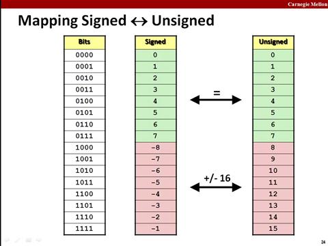
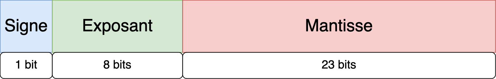
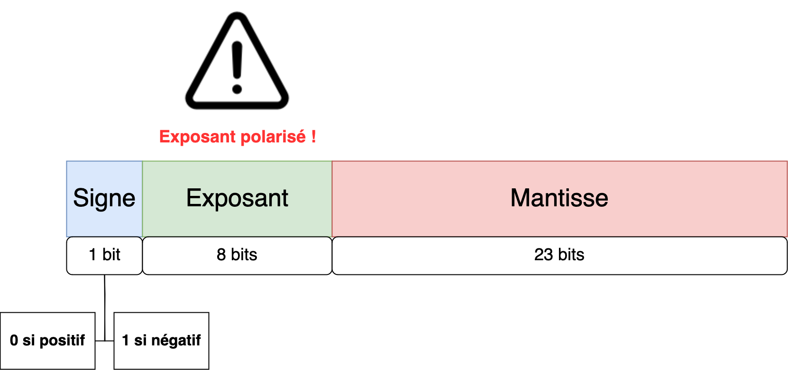
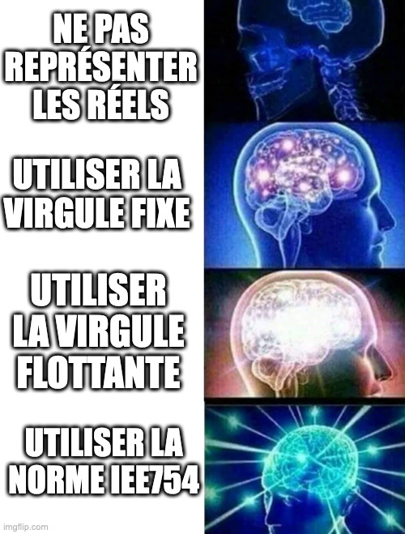

class: center, middle # Le traitement de l'information ## En mémoire... --- ## Liens avec la programmation Maintenant que nous avons vu la théorie ... Comment sont concrètement stockés les entiers et les réels dans la mémoire d'un ordinateur ? <img height="200px" src="img/warning.avif"> <span style="color: red;">Dépend de chaque langage de programmation !</span> → Nous allons nous baser sur le langage C --- ## Codage des entiers (langage C) Les entiers peuvent être : * codés sur différentes tailles * être signés ou non → un entier non signé ne stocke aucune valeur négative <div style="text-align: center;"> <p></p> </div> --- ## Codage des entiers (langage C) Prenons une taille mémoire de 16 bits, combien de nombres peut-on représenter ? * Si les entiers sont non signés : -- * 2<sup>16</sup> nombres càd de 0 à 65535 * Si les entiers sont signés : -- * 2<sup>15</sup> nombres pour la partie négative * 2<sup>15</sup>-1 nombres pour la partie positive * autrement dis, de -32768 à 32767 --- ## Codage des entiers (langage C) En C, il existe trois types pour représenter les entiers : `short`, `int` et `long` | | **Nombre d'octets** | **Entier signé** | **Entier non signé** | |:---------: |:-------------------: |:------------------------: |:--------------------: | | **short** | 2 | -32768 à 32767 | 0 à 65535 | | **int** | 4 | -2147483648 à 2147483647 | 0 à 4294967296 | | **long** | 8 | ... | ... | <div style="margin-top: 50px;"></div> L’opérateur `sizeof` permet de vérifier la taille en octets du type employé. `sizeof(int)` renvoie la valeur de la taille occupée en mémoire par un entier de type int. --- ## Codage des réels (langage C) ### Limites de la virgule fixe * La représentation classique des nombres réels pose problème : peu de valeurs disponibles ! * Exemple : une représentation décimale en virgule fixe ayant 7 chiffres peut représenter les nombres : * 1234567 * 123456,7 * 12345,67 * 1234,567 * 123,4567 * 12,34567 * 1,234567 --- ## Codage des réels (langage C) ### Solution : la virgule flottante ! * Avec le système de virgule flottante, on peut représenter beaucoup plus de nombres ! * Si on reprend l'exemple précédent. On peut représenter (en plus des nombres précédents) * 0,1234567 = 1,234567 × 10<sup>-1</sup> * 0,01234567 = 1,234567 × 10<sup>-2</sup> * 12345670 = 1,234567 × 10<sup>7</sup> * ... --- ## Codage des réels (langage C) ### La virgule flottante, oui mais pas sans se mettre d'accord ! Le problème de la virgule flottante est que l'on peut représenter un même nombre de plusieurs manières : * 12345670 = 1,234567 × 10<sup>7</sup> * 12345670 = 12,34567 × 10<sup>6</sup> * 12345670 = 123,4567 × 10<sup>5</sup> * ... Et c'est le même problème en binaire ... * 101011 = 1,01011 * 2<sup>5</sup> * 101011 = 101,011 * 2<sup>3</sup> * ... → <span style="color: red;">Il faut donc se mettre d'accord sur la manière de représenter les réels sous la forme d'une virgule flottante</span> --- ## Codage des réels (langage C) ### La solution finale : la norme IEE 754 * Dans la norme IEEE 754, il existe une modélisation qui utilise 32 bits, appelée également **simple précision**. * La **double précision** utilise quant à elle 64 bits. * Nous allons nous focaliser sur la simple précision qui correspond au type `float` du langage C. * Elle consiste à représenter un nombre sous la forme : <div style="text-align: center;"> <p></p> </div> --- ## Codage des réels (langage C) ### La solution finale : la norme IEE 754 <div style="text-align: center; margin-bottom: 50px;"> <p></p> </div> → démonstration au tableau --- ## Codage des réels (langage C) ### La solution finale : la norme IEE 754 <div style="text-align: center;"> <p></p> </div> --- ## Sources des images * https://computerscience.chemeketa.edu/cs160Reader/_images/face.png * https://i.pinimg.com/originals/ee/33/57/ee3357914e2a2fc617d3e2fdee1c7d93.png